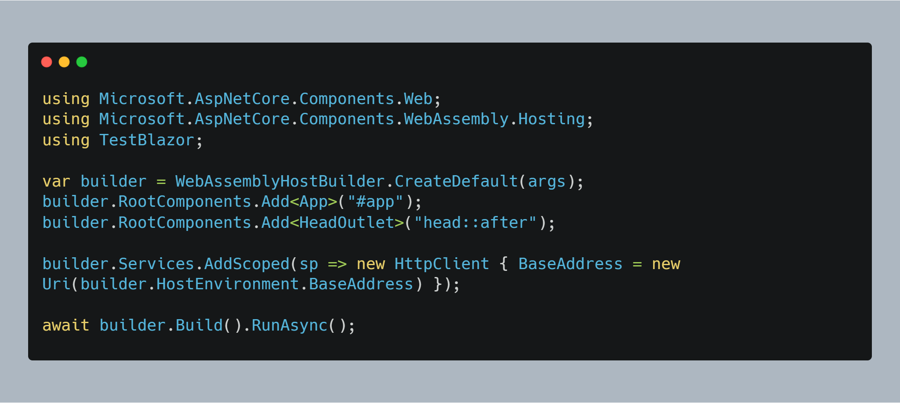
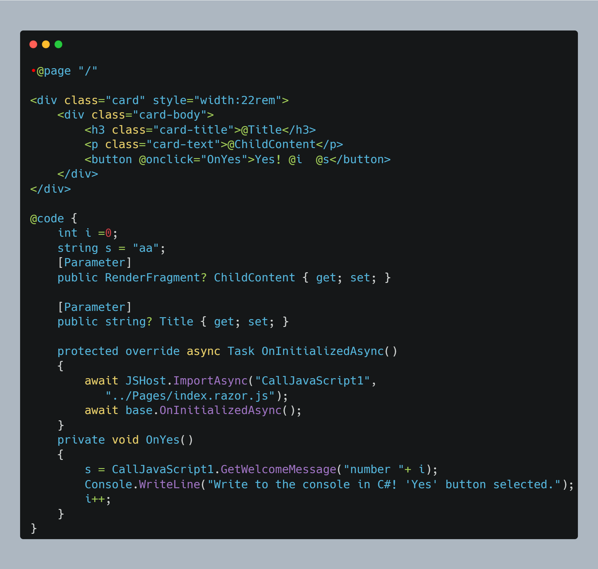
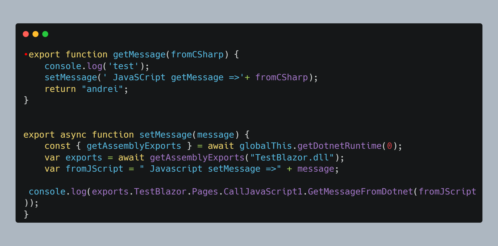
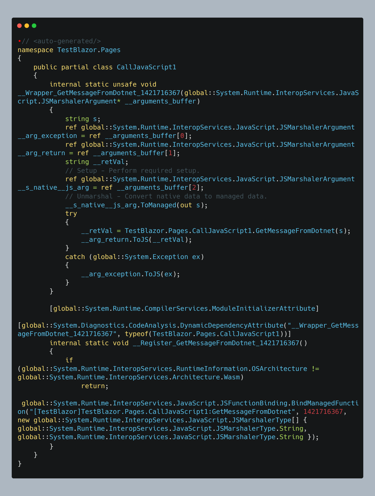
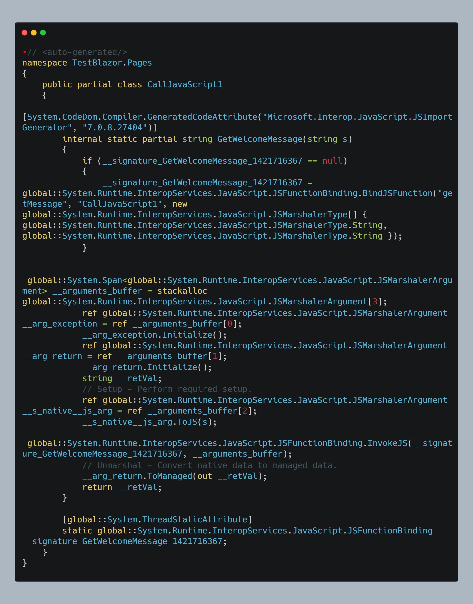
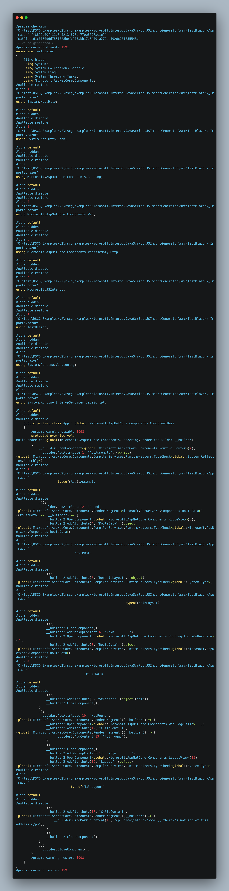
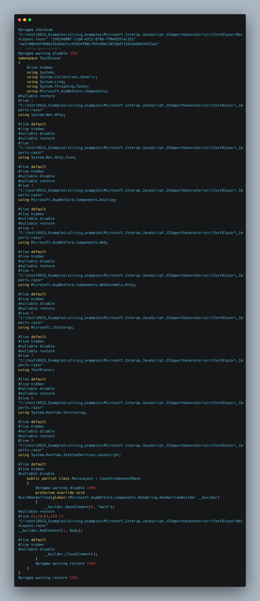
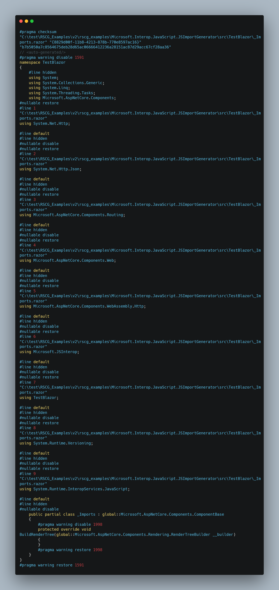

RSCG nr 21 : Microsoft.Interop.JavaScript.JSImportGenerator
Info
Nuget :
You can find more details at :
Author :Microsoft
Source :
About
Generating partial JSimport / JSExport in C# form
How to use

This was for me the starting code
I have coded the file Program.cs

I have coded the file Index.razor.cs

I have coded the file Index.razor

I have coded the file index.razor.js

And here are the generated files
The file generated is JSExports.g.cs

The file generated is JSImports.g.cs

The file generated is App_razor.g.cs

The file generated is MainLayout_razor.g.cs

The file generated is Pages_Index_razor.g.cs

The file generated is _Imports_razor.g.cs

You can download the code and this page as pdf from
https://ignatandrei.github.io/RSCG_Examples/v2/docs/Microsoft.Interop.JavaScript.JSImportGenerator
You can see the whole list at
https://ignatandrei.github.io/RSCG_Examples/v2/docs/List-of-RSCG